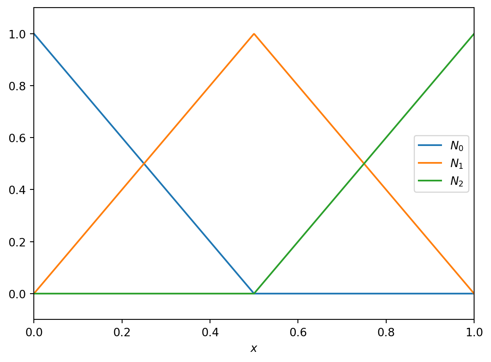

3 Finite Elements
We have seen that approximating a PDE using finite differences is straightforward (which both helps a human to implement it, and a computer to solve it very efficiently). However, we have also seen that the errors introduced can be both larger than we want and difficult to control, introducing unphysical effects (incorrect wave propagation, loss of monotonicity, loss of positivity, etc).
We also saw that high accuracy can be maintained by using spectral methods, linked to an approximation of the unknowns in terms of a series expansion of known functions (such as a Fourier series). However, these have problems near steep gradients (spectral ringing or Gibbs oscillations) which can again produce unphysical effects. They also couple every data point in the domain, which makes them less straightforward and more computationally expensive.
Finally, we saw through finite volume methods how general unstructured grids could be used, and how a suitable choice of how to represent the function some key features (conservation of mass, monotonicity) can be preserved. These schemes are more complex but still only couple a limited number of points. The methods introduced so far have relatively low orders of accuracy.
Our aim here is to discuss finite element methods. These have the flexibility of finite volume methods whilst (in principle) both allowing for high order (even spectral) accuracy and also allowing for key physical properties being maintained. They are necessarilly more complex, so we need to spend more time discussing the background theory of the mathematics and the software engineering of the implementation.
In a finite element method the domain is split into elements which are (in most ways) indistinguishable from finite volume cells. In finite element methods there is no expectation that the elements and their edges and nodes which bound the elements have any structure to them.
The notation in this section largely follows (Hughes 2012).
3.1 One dimension, time independent
Take the advection-diffusion equation describing the motion of pollution concentration with a source of pollution, (Equation 1.4),
\[ \frac{D \Psi}{D t} = \frac{\partial \Psi}{\partial t} + \mathbf{u} \cdot \nabla \Psi = S + \mu_{\Psi}\nabla^2 \Psi. \tag{3.1}\]
For now we will restrict to one spatial dimension and look for the steady state solution where the pollution generated by the source \(S\) is balanced by the diffusion term with coefficient \(\mu_{\Psi} = \mu\), assuming that the wind velocity vanishes. We will also absorb the value of the diffusion coefficient \(\mu\) into the source \(S\). Therefore the equation to solve is
\[ 0 = S + \partial_{xx} \Psi . \tag{3.2}\]
To be concrete we will assume that the domain on which we are solving is \(x \in [0, 1]\), that the amount of pollution at the left boundary is fixed, and that the flux of pollution at the right boundary is also fixed,
\[ \Psi(0) = \alpha, \quad \partial_x \Psi |_{x=1} = \beta. \tag{3.3}\]
3.2 Boundary conditions
As finite element methods are designed to work on complex domains with complex boundaries, the boundary conditions are built in at the mathematical level. We need to consider the different types separately.
We remove the Dirichlet boundary condition (here at \(x=0\)) by writing
\[ \Psi(x) = \psi(x) + q(x), \tag{3.4}\]
where \(q(x)\) is a known function chosen so that \(q(0) = \alpha\). That means that \(\psi(0) = 0\), and \(\psi\) satisfies homoegeneous boundary conditions. We will solve for \(\psi\) and then put the boundary condition back in later. This can either be done globally (by making \(q\) a constant, or non-zero eveywhere), or locally (by making \(q\) non-zero only in a small region). The local approach is standard.
Neumann boundaries, however, are built into the way the method works.
3.3 Weak form
Now we want to remove the second derivatives from the problem, as it is easier to reason about first derivatives alone. When working with finite volumes we saw that we could remove derivatives by integrating over the domain. However, we then ended up working with volume averaged quantities. To keep our steps more general, we first multiply by an arbitrary, smooth function \(w(x)\), and then integrate over the domain. As we already know the value of the solution at the left boundary due to the Dirichlet boundary condition, we can weight its value there to zero by enforcing \(w(0) = 0\).
The function \(w(x)\) is referred to as the weighting function. Using integration by parts the steady state advection diffusion equation becomes
\[ \begin{split} 0 = \left[ w(x) \partial_x \Psi(x) \right]_0^1 - \int_0^1 \partial_x \Psi(x) \partial_x w(x) \, \text{d}x \\ + \int_0^1 w(x) S(x) \, \text{d}x. \end{split} \tag{3.5}\]
We introduce the “inner product” notation
\[ (f, g) = \int_0^1 f(x) g(x) \, \text{d}x \tag{3.6}\]
and use the boundary conditions to give
\[ (\partial_x \psi, \partial_x w) = w(1) \beta - (\partial_x q, \partial_x w) + ( w, S ). \tag{3.7}\]
This is the weak form of the equations. It is written in this fashion as the unknown term (\(\psi(x)\)) is on the left hand side, but all terms on the right are either known (\(\beta, q, S\)) or arbitrary (\(w\)). It can be proved that solutions of the strong form in (Equation 3.2) are also solutions of (Equation 3.7).
3.4 Function representation
In finite volume methods the domain is split into cells, or volumes, within which \(\Psi\) is presented by a single number (its volume average). In finite element methods the domain is split into elements, which in many ways are indistinguishable from volumes, within which \(\Psi\) and any other function is represented in terms of a series expansion. For example, we could choose within each element to represent \(\Psi\) as a (truncated) Fourier series, or Taylor series.
However, for practical purposes, we want to link the representations in neighbouring elements, but decouple the representations in elements that are not neighbours. To do this, we introduce shape or basis functions which are associated with the nodes of the grid.
To make this concrete, take our domain \(x \in [0, 1]\) and split it into two elements \(I_0 = [0, \tfrac{1}{2}]\) and \(I_1 = [\tfrac{1}{2}, 1]\). The boundaries of the elemnts give us the three nodes \(\{ x_A \} = \{0, \tfrac{1}{2}, 1\}\). Here \({}_A\) is a label - an integer labelling the nodes - which we count from \(0\) (so \(A \in \{0, 1, 2\}\)). We then write the function of interest, \(\psi\), as
\[ \psi(x) = \sum_A \psi_A N_A(x), \tag{3.8}\]
where \(N_A(x)\) are the shape functions.
We choose \(N_A(x)\) to take the value \(1\) at node \(x_A\) and take the value \(0\) at any other node. This immediately means that \(\psi_A = \psi(x_A)\). Therefore the nodal values behave much like a finite difference representation.
We immediately note that our (approximate) solution process must compute, somehow, the values of \(\psi_A\). Some are already known: the boundary condition at \(x=0\) in our case immediately implies that \(\psi_0 = 0\). The other values must be fixed by the solution of (Equation 3.7).
There are now many choices we can make to fix the shape functions. The simplest is to choose the shape functions to be piecewise linear. This gives
\[ \begin{aligned} N_0(x) &= \begin{cases} 1 - 2 x & 0 \le x \le 1/2 \\ 0 & 1/2 \le x \le 1 \end{cases} \\ N_1(x) &= \begin{cases} 2 x & 0 \le x \le 1/2 \\ 2 - 2 x & 1/2 \le x \le 1 \end{cases} \\ N_2(x) &= \begin{cases} 0 & 0 \le x \le 1/2 \\ 2 x - 1 & 1/2 \le x \le 1 \end{cases} \end{aligned} \tag{3.9}\]
We now make the Galerkin assumption that the same function basis expansion is used for the unknown function \(\psi\) and also for the test function \(w\). We write out \(w\) and \(q\) using the same shape functions. As noted above we enforce that \(q\) drops immediately to zero away from the boundary, which means we write
\[ q(x) = \alpha N_0(x). \tag{3.10}\]
This means the weak form (Equation 3.7) becomes
\[ \begin{split} \sum_B w_B \sum_A \psi_A ( \partial_x N_A, \partial_x N_B ) = w_{N_\text{elements}} \beta - \\ \alpha \sum_B w_B ( \partial_x N_0, \partial_x N_B ) + \sum_B w_B ( N_B, S ) . \end{split} \tag{3.11}\]
This has to be true for any choice of weight function \(w\), so for any choice of the coefficients \(w_B\). We gather terms as
\[ \sum_B w_B \left\{ \sum_A K_{AB} \psi_A - F_B \right\} = 0. \tag{3.12}\]
To hold for any choice of weight function the term in curly brackets must vanish. Here the stiffness matrix \(K\) and force vector \(\mathbf{F}\) are independent of \(\psi\). The steps here are very similar to those in the implicit finite difference methods such as BTCS. This gives
\[ K \symbf{\psi} = \mathbf{F}, \tag{3.13}\]
where the coefficients of the stiffness matrix \(K\) are given by
\[ K_{AB} = \int_0^1 \partial_x N_A(x) \partial_x N_B(x) \, \text{d}x \tag{3.14}\]
and the coefficients of the force vector \(\mathbf{F}\) are given by
\[ \begin{split} F_B = \beta \delta^{N_\text{elements}}_B + \int_0^1 N_B(x) S(x) \, \text{d}x \, - \alpha \int_0^1 \partial_x N_A(x) \partial_x N_B(x) \, \text{d}x . \end{split} \tag{3.15}\]
Here \(\delta^C_B\) is the Kronecker delta (zero except when \(B \equiv C\), where it is one) and encodes the Neumann boundary value.
Note that the final term in the force vector (which results from the Dirichlet boundary condition) has a very similar form to the entries of the stiffness matrix. However, the shape function \(N_0\) is non-zero at the boundary of the domain, which can cause issues with directly using the stiffness matrix here. For that, and other reasons, it is best to use the element viewpoint below.
Exercise 3.1
- Compute (analytically) the coefficients of the stiffness matrix given the shape functions above in (Equation 3.9).
- Compute (analytically) the coefficients of the force vector when \(S(x) = 1 - x\).
- Solve (numerically) for \(\psi_A\) and plot the resulting solution for \(\psi(x)\). In the simplified case \(\alpha = 0 = \beta\) we can choose \(q(x) \equiv 0\), so that \(\Psi = \psi\). Compare against the exact solution \(\Psi(x) = x (x^2 - 3 x + 3) / 6\).
3.5 The element viewpoint
This works surprisingly well given the small number of elements and associated nodes. However, as the sources get more complex we will need to work with more elements to improve accuracy. We need to go about this more systematically.
First we note that in any element there are only two shape functions that are not zero. In the notation we have used so far element \(I_A = [x_{A}, x_{A+1}]\) and the two non-zero shape functions have been \(N_{A}\) and \(N_{A+1}\).
Second, we note that in general the elements will have different sizes. In higher dimensions this gets ever more complicated. However, by using a coordinate transformation, we can take any element from the interval \([x_{A}, x_{A+1}]\) to the interval \(\xi \in [-1, 1]\). We have
\[ \begin{aligned} \xi(x) &= \frac{2 x - x_{A} - x_{A+1}}{x_{A+1} - x_{A}}, \\ x(\xi) &= \frac{(x_{A+1} - x_{A}) \xi + x_{A} + x_{A+1}}{2} . \end{aligned} \tag{3.16}\]
We can now write the two non-zero shape functions in terms of the reference coordinates \(\xi\) as
\[ N_a(\xi) = \tfrac{1}{2} (1 + \xi_a \xi), \quad a = 1, 2. \tag{3.17}\]
The label \(a\) is labelling the shape functions within the reference element, written in terms of the reference coordinates. These labels can be linked back to the original shape functions in the end.
Now, we remember that the weak form is written in terms of the stiffness matrix and force vector, and these depend on integrals of the shape functions and their derivatives. Computing the derivatives in the reference coordinates is straightforward,
\[ \partial_\xi N_a = \frac{(-1)^a}{2}. \tag{3.18}\]
To map this back to derivatives in the original coordinates we require a Jacobian, which needs the derivatives of the coordinate transformation. This needs
\[ \begin{aligned} \partial_x \xi &= \frac{2}{x_{A+1} - x_{A}}, \\ \partial_\xi x &= \frac{x_{A+1} - x_{A}}{2}. \end{aligned} \tag{3.19}\]
We can now compute the contribution that one single element \(e = I_A\) makes. This is
\[ \begin{aligned} k_{ab}^e & = \int_{x_{A}}^{x_{A+1}} \partial_x N_a \partial_x N_b \, \text{d}x \\ &= \int_{-1}^1 \partial_{\xi} x \partial_x N_a \partial_x N_b \, \text{d}\xi \\ &= \int_{-1}^1 \left(\partial_{\xi} x\right)^{-1} \partial_\xi N_a \partial_\xi N_b \, \text{d}\xi \\ &= \frac{(-1)^{(a+b)}}{x_{A+1} - x_{A}}. \end{aligned} \tag{3.20}\]
This is incredibly useful: there’s no need to do any integrals at all. Note that this gives a \(2 \times 2\) matrix corresponding to a single element: to get the complete stiffness matrix we need to “add all these up”.
The element force vector is, in general, more complex, as it involves an integral over the complex source \(S\). However, we can approximate this by writing the source in terms of its values at the nodes as well, so
\[ S(x) = \sum_a S_a N_a(x), \tag{3.21}\]
giving \(S_a = S(x(\xi_a))\). We can then compute, for the simple shape functions we use here,
\[ f^e_a = \frac{x_{A+1}-x_{A}}{6} \begin{pmatrix} 2 S_1 + S_2 \\ S_1 + 2 S_2 \end{pmatrix} \, . \tag{3.22}\]
Finally, we need to include the boundary condition terms in the force vector. To include the Neumann boundary condition at the right boundary we adjust the final entry,
\[ F_{N_\text{elements}} \to F_{N_\text{elements}} + \beta. \tag{3.23}\]
To include the Dirichlet boundary condition at the left boundary we adjust the first entry, which needs adjusting using \(\int \partial_x N_0 \partial_x N_B\). For the linear shape functions chosen here this is only non-zero within the first element, so we can use the local stiffness matrix to adjust the first entry,
\[ F_0 \to F_0 - \alpha k^0_{12}. \tag{3.24}\]
(Note that the numbering here has the first element number \(e=0\) and the local labels \(a \in \{1, 2\}\))
3.6 Linking elements to equations
Our goal is to construct a linear (matrix) equation to give us the solution \(\psi_A\) at all nodes \(A\) where it isn’t enforced by the boundary conditions (which, in the example so far, is all nodes except the left-hand boundary). We note that each interior node is linked to two elements, so contributions from the element matrix will affect more than one equation.
To keep track of this, we construct the location matrix or location array \(LM\) which, given the node number \(a \in \{1, 2\}\) and the element number \(e\) returns the associated equation number.
Any node that is not to be included (as its value is given by a Dirichlet boundary condition) has its associated equation number \(A\) set to \(-1\). The first node that must be included is given value \(0\). We then go element-by-element: the left-hand node of element \(e\) is the same as the right-hand node of element \(e-1\), so picks up the same equation number. The right-hand node of element \(e\), if considered, then has equation number one higher than the left-hand node of that element. This translates directly into Python code:
N_elements = 4 # for example
LM = np.zeros((2, N_elements), dtype=np.int64)
for e in range(N_elements):
if e==0:
# Treat first element differently due to BC
LM[0, e] = -1 # Left hand node of first element
# is not considered thanks to BC.
LM[1, e] = 0 # the first equation
else:
# Left node of this element is
# right node of previous element
LM[0, e] = LM[1, e-1]
LM[1, e] = LM[0, e] + 1Now the global stiffness matrix and force vector can be assembled: for each element \(e\) we construct the element \(k^e_{ab}\) and \(f^e_b\) and add the appropriate components, as
\[ \begin{aligned} K_{LM(a, e)\,LM(b,e)} &= K_{LM(a, e)\,LM(b,e)} + k^e_{ab} & a, b &\in \{1, 2\}, \\ f_{LM(b, e)} &= f_{LM(b, e)} + f^e_b & b &\in \{1, 2\}. \end{aligned} \]
Note that we need one more structure to keep track of the boundary conditions. As noted above, if a node is on a boundary then the value of the force vector needs modifying, either by including its value directly (in the case of a Neumann boundary) or by using some appropriate multiple of the local stiffness matrix (in the case of a Dirichlet boundary). This structure must map the node number to the value in the boundary condition; the location matrix can be used to check the boundary condition type.
3.7 Algorithm
This gives our full algorithm:
- Set the number of elements \(N_{\text{elements}}\).
- Set node locations \(x_A\), where \(A = 0, \dots, N_{\text{elements}}\).
- Set up the location matrix \(LM\).
- Set up a boundary value structure (in Python a dictionary would work).
- Set up arrays, initially all zero, for the global stiffness matrix (size \(N_{\text{elements}} \times N_{\text{elements}}\)) and for vector (size \(N_{\text{elements}}\)).
- For each element:
- Form the element stiffness matrix \(k^e_{ab}\).
- Form the element force vector \(f^e_b\).
- Add the contributions to the global stiffness matrix and force vector.
- Modify using the boundary values if needed.
- Solve \(K \symbf{\psi} = \mathbf{F}\).
Exercise 3.2 Write a finite element solver for the problem above, as a function that takes as input the number of elements and the source function \(S\), as well as the boundary conditions \(\alpha, \beta\). It should use a uniformly spaced grid, and return the nodes \(x_A\) and the solution at the nodes \(\Psi_A = \psi_A + q_A\).
Check that the function returns the same result as above when used with two elements and \(S(x) = 1 - x\).
The apply the solver to the case \(S(x) = (1 - x)^2\) with exact solution \(\Psi(x) = x (4 - 6 x + 4 x^2 - x^3) / 12\). Compute the 2-norm of the error and check how it converges with resolution.
Finally check that the solver works on the case
\[ S(x) = \begin{cases} 1 & |x - \tfrac{1}{2}| < \tfrac{1}{4}, \\ 0 & \text{otherwise} \end{cases} \tag{3.25}\]
with boundary conditions
\[ \alpha = \Psi(0) = 0.1, \quad \beta = \partial_x \Psi(1) = -0.2. \tag{3.26}\]
The exact solution in this case is
\[ \Psi = \begin{cases} 0.3 x + 0.1 & x < \tfrac{1}{4} \\ -\tfrac{1}{2} x^2 + 0.55 x + \tfrac{11}{160} & \tfrac{1}{4} < x < \tfrac{3}{4} \\ -0.2 x + 0.35 & x > \tfrac{3}{4} \end{cases}. \tag{3.27}\]
Tip
It will be useful for later purposes to write helper functions that compute the global coordinates from the reference coordinates, and compute the elements matrices and vectors from the nodes.